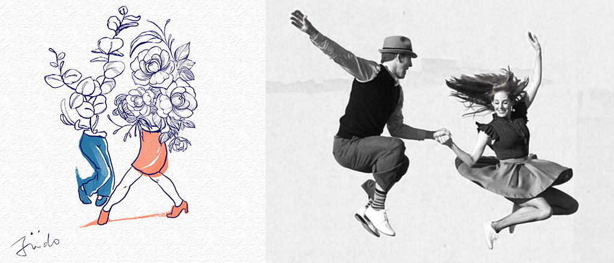

Hello world~ 我是Judo :)
從事影像設計約莫10年的
平面/網頁設計師
持續摸索跟專研有利於各類圖像創作的媒介與技術
目前回歸圖象創作ING~~
Hello world~
my name is Judo WhoWho and
I am a and senior graphic designer from Taipei.
從事影像設計約莫10年的
平面/網頁設計師
持續摸索跟專研有利於各類圖像創作的媒介與技術
目前回歸圖象創作ING~~
Hello world~
my name is Judo WhoWho and
I am a and senior graphic designer from Taipei.
TatooDesign

- Project Name
- Poster
- Client
- Swing Dancer
- Year
- 2019
Swing Dancer in Taipei - 萬花筒
ㄧ直以來很想畫以swing為主題的作品，所以這次以位於民權西路的萬花筒舞廳的舞者們為主題。
無論在場邊或是平時生活的空檔，我都在思考著如何將舞者與周遭的環境結合，這幅畫想藉由花朵的綻放與盛開象徵follower的舞蹈所給予的精神張力，以及leader們在與follower們進行同一個八拍時所選擇的角色狀態，音樂如空氣般流動，而我們都是被音樂推著舞動的舞者們，喜悅與收放的具體表象，我們一同享受不需言語用音樂與身體溝通的狀態。
台北的swing social場地，比起以往4、5年前更多之外，不同場地所傳達的氛圍跟想法也更多元，所以接下來我想繪製更多以social場地為主題的舞者們，也算是是紀錄生活的方式之一